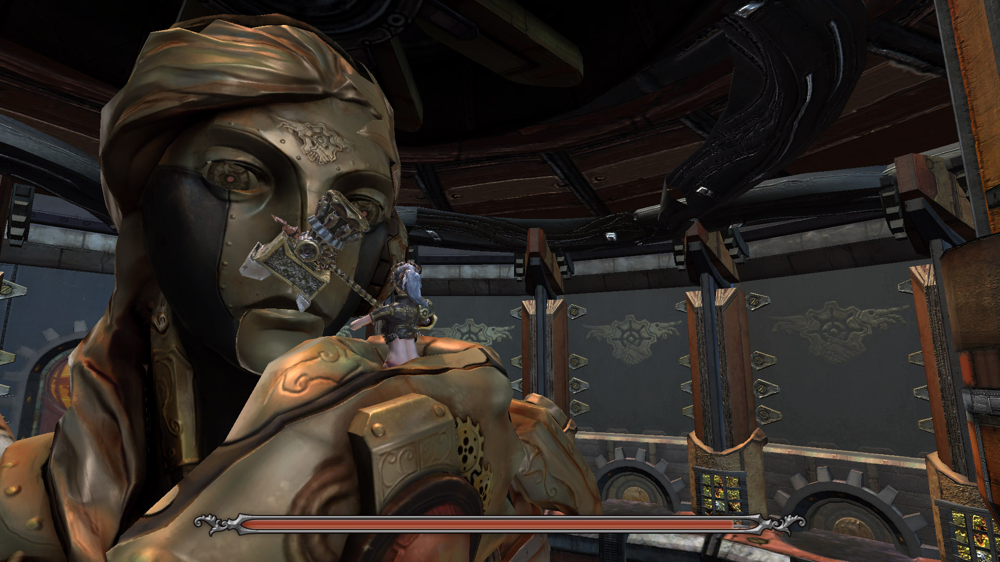

《 Cybernetics 機控全城 》是一款動作冒險遊戲。人類以大地之母的形象創造了管理城市的機器人－蓋亞，然而在啟動的同時蓋亞卻失控了。身為蓋亞創造工程師之女的緹娜，在自家門前的街道醒來，主要的記憶都喪失了，殘存的記憶告訴自己需要去阻止蓋亞的失控與破壞。
然而她並沒有發現這復甦不過是一場遊戲...。
| 【 遊戲類型 】 | 動作解謎 |
| 【 平 台 】 | PC、 ( Mac試驗中 ) |
| 【 語 言 】 | 中文、附語音 |
| 【 遊戲時數 】 | 約 2 小時 |
《 Cybernetics 機控全城 》是一款動作冒險遊戲。人類以大地之母的形象創造了管理城市的機器人－蓋亞，然而在啟動的同時蓋亞卻失控了。身為蓋亞創造工程師之女的緹娜，在自家門前的街道醒來，主要的記憶都喪失了，殘存的記憶告訴自己需要去阻止蓋亞的失控與破壞。
然而她並沒有發現這復甦不過是一場遊戲...。
| 【 遊戲類型 】 | 動作解謎 |
| 【 平 台 】 | PC、 ( Mac試驗中 ) |
| 【 語 言 】 | 中文、附語音 |
| 【 遊戲時數 】 | 約 2 小時 |
Cybernetics 我們將它解釋為一種將生物有目的的行為賦予給機器的基本思想。
遊戲 Logo 設計成為遊戲內容的諷刺，所呈現的是人類與機械共同友好的形象。中間的船舵正是這城市的一項偉大建設－方舟計畫的形象元素。然而遊戲中卻是機械因為失控消滅了人類，這說到頭來，都是人自食惡果的關係。
生命對人類的意義是什麼？古代的人會自行耕種、採集、捕獵，來使生活得到滿足。然而18世紀工業革命之後，人類開始依賴機器生活。原本很多的農耕、採集、生產食物的行為，漸以機械全面替代。靠全自動化機械的幫助，生活越來越簡單。但對機械卻越漸仰賴；將來的某一天人類能否嘗到機器與人之間地位相反的情況？
緹娜醒來之後整座城市都變了，變成到處都是機器人的世界，已經看不到其它的路人。就像當年人類製造機器人一樣，蓋亞製造出的這一切猶如玩具，等待緹娜的反抗，等待她破解一道一道的謎題。
人類變成機械的掌中物，聽起來很讓人不愉快，我們對待機械何嘗不是這種態度？或許哪一天真正有了有智慧的機器人時，我們將會面臨到相同的問題。
遊戲中可以自由地切換成三種不同的武器，利用不同的武器擊退周圍的敵人吧！
跟隨在緹娜身邊的小機器人還可以操作呢究竟在什麼地方上會派上用場呢？


結合以上兩種特色，將有各式各樣的謎題等著被你解開。
歡迎按讚以獲得最新的資訊